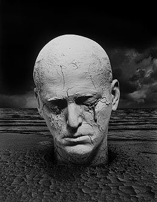
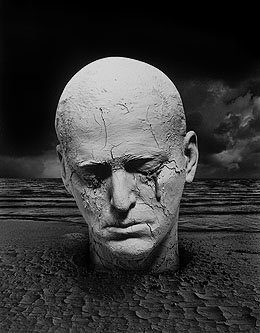
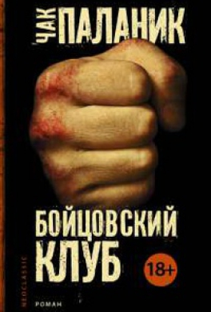
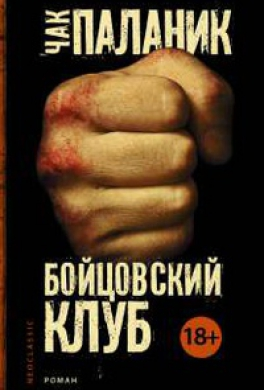
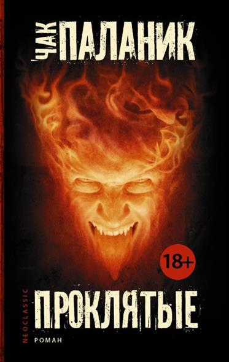

Уцелевший
Тендер Брэнсон — единственный уцелевший из своей религиозной общины. Он рассказывает историю своей жизни чёрному ящику на борту рейса 2039 самолета «Боинг-747», летящего где-то над Тихим океаном.
Цель общины — помощь обычным людям следить за их домами. На протяжении всей книги автор дает советы как очистить такие-то пятна или отстирать какую-либо грязь, чем полить цветы, чтобы они дольше не вяли или как отпугивать мелких грызунов.
Но вера их развенчана, и фанатики начинают умирать один за другим, а в один прекрасный момент главный герой становится новым мессией…


Бойцовский клуб
К написанию романа Паланика вдохновила драка, в которой он участвовал во время поездки в летний лагерь. Несмотря на то, что у него были ушибы и синяки, его коллеги предпочли не спрашивать, что с ним
произошло в поездке. Именно их нежелание знать, что случилось, вдохновило писателя на написание романа «Бойцовский клуб». Паланик сначала пытался выпустить роман «Невидимки», но издатель не согласился опубликовать его, посчитав слишком возмутительным. Поэтому писатель сконцентрировался на написании «Бойцовского клуба», стараясь сделать его ещё более возмутительным назло издателю. Первоначально «Бойцовский клуб» был издан в виде рассказа на семь страниц в сборнике «Pursuit of Happiness», но позже Паланик расширил его до полноценного романа (в котором оригинальный короткий рассказ стал шестой главой). «Бойцовский клуб» был переиздан в 1999 и 2004 годах. Последний выпуск включал в себя предисловие автора про успех самого романа и его экранизации. Автор объяснил успех так: «Книжные магазины были заполнены такими книгами как „Клуб радости и удачи“, „Божественные тайны сестричек
Я-Я“ и „Лоскутное одеяло“. Все эти романы представили социальную модель для женщин. Но не было романов, которые представили бы новую социальную модель для мужчин». Позже он пояснил: «В действительности то, что я написал, было просто немного обновлённым романом „Великий Гэтсби“. Это был „апостольский“ роман — где выживающий апостол рассказывает историю своего героя. Есть двое мужчин и женщина. И один мужчина, герой, погибает от пули».

произошло в поездке. Именно их нежелание знать, что случилось, вдохновило писателя на написание романа «Бойцовский клуб». Паланик сначала пытался выпустить роман «Невидимки», но издатель не согласился опубликовать его, посчитав слишком возмутительным. Поэтому писатель сконцентрировался на написании «Бойцовского клуба», стараясь сделать его ещё более возмутительным назло издателю. Первоначально «Бойцовский клуб» был издан в виде рассказа на семь страниц в сборнике «Pursuit of Happiness», но позже Паланик расширил его до полноценного романа (в котором оригинальный короткий рассказ стал шестой главой). «Бойцовский клуб» был переиздан в 1999 и 2004 годах. Последний выпуск включал в себя предисловие автора про успех самого романа и его экранизации. Автор объяснил успех так: «Книжные магазины были заполнены такими книгами как „Клуб радости и удачи“, „Божественные тайны сестричек
Я-Я“ и „Лоскутное одеяло“. Все эти романы представили социальную модель для женщин. Но не было романов, которые представили бы новую социальную модель для мужчин». Позже он пояснил: «В действительности то, что я написал, было просто немного обновлённым романом „Великий Гэтсби“. Это был „апостольский“ роман — где выживающий апостол рассказывает историю своего героя. Есть двое мужчин и женщина. И один мужчина, герой, погибает от пули».

Проклятые
Рассказчица — это полная и интеллигентная тринадцатилетняя Мэдисон, отправленная на вечные муки. Она считает, что умерла от передозировки марихуаны, которую ей дали её богатые родители. Её мать — кинозвезда, а отец — бизнесмен. В преисподней Мэдисон со своими новыми товарищами — молодыми грешниками, которые по своим характерам напоминают героев «Клуба „Завтрак“» (то есть: «принцесса», «качок», «мозг», «бандит», соответственно роль «чудачки» остается за Мэдисон) изучает адские пейзажи, ищет Сатану и убегает от демонов. В сумасшедшем аду, созданным Чаком Палаником, снова и снова отображается «Английский пациент», валюта — это сладости, которые трудно найти, а мертвые общаются с живыми с помощью телемаркетинга. Мэдисон теперь уже навсегда маленькая мертвая девочка, но не могла бы ли она найти дорогу в Рай?
В Аду каждый день — это спектакль, написанный Сатаной, который на самом деле является автором судьбы Мэдисон и продюсирует каждый её поступок, поскольку в антимире «умирает» Бог и на его место приходит Сатана, который вершит судьбы. Сатана — это кукловод, который ведёт книгу жизни. После встречи с Сатаной девочка понимает, что весь ход её жизни, все её поступки, слова и даже мысли определены Сатаной.
